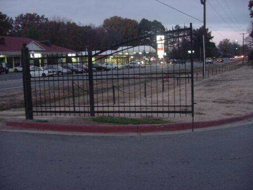
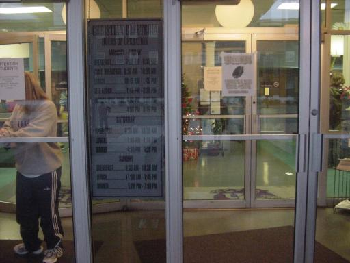

Article # 3
What Are The Social Control Districts at the University of Central Arkansas?


B10: Socially Constructed Geographies
"Social Control Districts at UCA"
By Jason Stewart, Karen Wright, Chris Ferrand, Isis Pettway, and April Cruce
(Sleazy Doctors of Social Control Districts)
Principles of Geography: Geog 1305, Section A
Prepared: December 5, 2000
What Are The Social Control Districts at the University of Central Arkansas?
To understand where the social control districts of the University of Central Arkansas are we first need to understand what a social control district is. Social control districts are areas which create order where there is disorder (Young 1992:1). Paul Sites states in his book, Control: The Basis of Social Order, that, "the most fundamental component in individual and social life is that of control; that the individual, either on his own or in coalition with others, attempts to control the situational context by controlling the behavior of others as well as his own." They focus on the strategies and techniques which help to regulate human behavior that lead to conformity to society’s rules. Social control leads people to conform to norms, which will control and define our behavior (Overview of Social Control Districts 2000:1). Social norms are the standards of expected behavior that are developed when one observes a pattern of uniform behavior among a group and the negative which result from noncompliance of that behavior (Epsychlopedia Social Control - Summary 2000: 1). They are all around us in everything we do whether we are aware of it or not. We are so used to living in a world with set
rules, regulations, and restrictions that we hardly even notice them. There are so many
examples! To name a few there are speed limits, quiet hours, smoking areas, access cards, and gates that close at certain times. Our need to make similar the dissimilar is evident in almost everything.
There is one main reason we have social control districts. This reason is our need to cope with chaos (Young 1992:2). It is very obvious that without these control measures things like parking would suddenly become pretty hectic. Parking at UCA is bad enough now with all the rules and regulations , but imagine what it would be like without them. What if anyone could park in any parking lot on campus? Empty parking spaces would suddenly become much more scarce. It would become even more frustrating to find a place to park. What if there were no designated quiet hours? Resident halls would become considerably louder and those studying or sleeping would have to find some place else to do so unless they buy earplugs. In these instances it is probably best that we have these rules.
The social control districts at UCA include, but are not limited to: parking lots, residence halls, the streets (crosswalks), the Christian Cafeteria, and the Torreyson Library. These areas have rules which control when we can use certain gated entries, when and where we can enter buildings such as the library, cafeteria, residence halls, when we can be noisy, where we can walk on the street, where and how fast we can drive, where residents, students, faculty, and visitors can park, where we throw away our trash, and visitation hours.
Parking
Parking lots are all around the campus, but it is usually hard to find open parking spaces on campus that are close to one’s destination. It is not uncommon to spend up to half an hour looking for an open parking space. Rules related to parking are very numerous. Students must buy a parking permit which consists of two decals registered in the name of the student (the larger of the two resident decals is shown in figure 6). These decals must be applied to certain places on the student’s vehicle. Students may receive a temporary permit for free from the Police Department for alternate vehicles brought to campus for a period of one to seven days (UCA parking and traffic rules and regulations 2000-2001).
Faculty and Staff are to park in marked "Yellow Area" parking spaces with yellow lines (shown in figure 3), while students are to park in areas marked "Student Parking" with spaces in white lines, and residents park in "Resident Parking" with spaces in green lines (shown in figure 5). UCA permit parking areas are set aside for student or faculty vehicles with current parking permits. Disabled persons may park in spaces reserved for the disabled as long as they have a current blue decal on their vehicle (a handicapped parking space at the UCA Police Station is shown in figure 7). Visitor parking areas are "reserved for persons who are not employees or students of the university," (UCA parking and traffic rules and regulations 2000-2001). These parking areas are made to ensure that faculty has enough parking close to the buildings that they teach in, residents can park close to their resident halls, and the disabled will able to get to where they need to without having to park long distances away.
No parking is allowed on grass, sidewalks, in driveways, loading zones, next to red curbs, red parking blocks, or in red or candy-striped areas and double parking is always a violation (UCA parking and traffic rules and regulations 2000-2001). Fines for parking offences range from ten dollars to twenty-five dollars and double if not paid in thirty days. If fines are not paid, then there may be a blocking of pre-registration, or a withhold of pay or refund checks. Violation ticket prices are as follows:
1. No permit $25.00
2. Defacing, reproducing, altering, or illegal use of permit $25.00
3. Falsifying registration information $50.00
4. Exceeding speed limit $25.00
5. Reckless/ unsafe driving $25.00
6. Failure to stop or yield right away $25.00
7. Parking in a disabled space $50.00
8. Parking at a red curb $15.00
9. Improper equipment $15.00
10. Double parking/ blocking $15.00
11. Parking in the wrong area $15.00
12. Parking in a no-parking area $15.00
13. Parking in a reserved area $15.00
14. Driving and/ or parking on grass $10.00
15. Driving/ parking wrong direction on a one-way street $10.00
16. Parking on the wrong side of the street $10.00
17. Over line parking $10.00
18. Improper display of permit $10.00
19. Overtime parking $10.00
20. Failure to display hanging permit $10.00
UCA also has the right to tow and impound any vehicle from its property that
does not display a current parking sticker, is improperly parked in a reserved area, or has
unpaid parking tickets. The vehicle will be towed until all towing fees and UCA traffic
parking violation charges have been paid (Parking Regulations 2000: 1-9).
Parking at Football Stadium on Game Weekends
Each year, as hundreds of UCA Bear fans prepare to attend football games at the UCA campus, the UCA Police Department begins to take away even more student parking. During the day before games, signs are put in the parking lot beside the stadium that read, "All cars must be removed from this lot from (date of game) at 5:00 p.m. until (date of game) at 11:00 p.m. We suppose that the reason UCA clears out the stadium parking lot is to ensure that all the students and faculty will have sufficient time to be warned and move their vehicles for fans to behave enough parking space for the games. This is a control district because it limits the spaces available for students and residents to park in.
The University of Central Arkansas already has too little parking for all of its students. This really creates an inconvenience for students that live in Hughes Residential College. These students have to share their parking lot with New Hall residents and are already cramped for space. This control district forces residents to search for other parking, which is sometimes on the other end of campus, or take the alternate route, parking at Subway. Parking there is close, but illegal and you risk having your vehicle towed.
Gates
Gates that close entrances control where students can enter or exit the UCA campus with their vehicles. UCA has ten entrances with three gates. Of the three gates, two close nightly at 8:00 p.m. and open at 4:00 a.m. One of the gates that closes nightly is located on Farris Road at the entrance to New Hall and Hughes Hall (this gate is shown in figure 1). The other gate that closes nightly is located on Bruce Street at the entrance by the stadium. The third gate, which is located on Marian Ross Drive has recently been kept closed twenty-four hours a day, but is now under construction. The other seven entrances are located at Student’s Lane, Beatrice Powell Street, L.A. Niven Drive, Alumni Circle, the entrance to Burdick Business Administration Building, the entrance to the baseball field on Donaghey Avenue, Sesame Street (the street entrance to the tennis court complex). These entrances without gates have manned booths with persons who control the access of vehicles without UCA parking permits. The booths at these entrances are manned from 8:00 p.m. until 12:00 a.m., and does not allow non-students to enter campus. After 8:00 p.m., all individuals in a vehicle must either be on a guest list or be able to provide a valid and current UCA ID card. Any non-student who is not on the guest list will be refused to enter (Campus Checkpoints and Control Theories 2000:1). This creates unrestricted access to the UCA campus after midnight. UCA must think that all the bad people stay home after 12:00 a.m.
Smoking and Tobacco Use
Smoking is prohibited in public areas inside residence halls which include hallways, bathrooms, lobbies, computer labs, and kitchens (University of Central Arkansas Student Handbook 2000-2001: 113). This is so the non-smokers will not have to be subjected to smoke. This is a social control district because it controls where people can and can not smoke. The Student Handbook also states that, "The right to live in a smoke free environment takes precedence over the right to smoke."
Access Cards at Dorms
Access cards restrict where certain students can obtain entrances into buildings. These cards are also the student’s ID card. In Hughes Residential College, for instance, females do not have access with their cards to activate the males’ doors, and vice versa (the girl’s entrance at the lobby is shown in figure 9). In a coed dorm, all residents can enter the main doors that lead to the lobby (the main doors and a card scanner are shown in figure 8). Only residents can enter the locked doors. In all male or all female dorms, visitors may enter the lobby and call for an escort. The lobby is unlocked during certain hours and all visitors may enter the lobby and call for their escort. Students residing in one hall can not also access the doors of other halls. This keeps people who do not reside in a building out, unless they have an escort, or get in by some other means. "Any student found giving their access card or key to another person to enter their room or building will be subject to disciplinary action" (University of Central Arkansas Student Handbook 2000-2001: 113). These rules ensure the resident’s safety, so that strangers will not have access to their dorm rooms, and so that residents of the opposite sex will not be able to
have unrestricted access to the other sex’s halls. This creates privacy for residents and is a safety measure to keep students safe from persons unauthorized to be in their residence hall. Resident Assistants and Resident Hall Coordinators enforce these rules.
Dorm Room Restrictions
Dorm room restrictions are very numerous. These restrictions control what residents can and cannot do. Students are not allowed to use or possess alcohol in residence halls even if the students are twenty-one (legal drinking age). Persons caught doing so "will be required to complete an alcohol education course" (University of Central Arkansas Handbook 2000-2001:105). Students are also not allowed to use drugs. Residents are not allowed to possess candles, incense, or potpourri in their rooms. If found, these items will be confiscated. Students can not use nails, hooks, or screws, painted murals, contact paper, or alcohol items including items that previously contained alcohol, such as empty bottles, bottle tops, or boxes to decorate their rooms; and open element appliances, refrigerators exceeding 3.8 cubic feet or 1.5 amps, hot plates, microwave ovens, sun lamps, personally owned air conditioners, or halogen lamps are
also not permitted. These rules are to avoid avoidable fire related accidents. All pets are also prohibited, the only exception being fish, and their tanks are limited to 10 gallons. Of course, guide dogs may be used only for the blind (University of Central Arkansas Student Handbook 2000-2001: 110). These rules are enforced by the Residence Assistants who inspect residence hall rooms several times per semester.
Campus and Residence Hall Quiet Hours
Outdoor campus noise policy (University of Central Arkansas Student Handbook 2000-2001: 109). Quiet hours for the campus are established from 10:00 p.m. to 7:00 a.m., Sunday through Thursday. Friday and Saturday hours are 11:00 p.m. to 7:00 a.m. The only exceptions are group activities such as outdoor dances, step shows, or similar instances. These activities must be approved by the president for student services. These campus quiet hours are to "provide a reasonable environment for academic pursuits" (University of Central Arkansas Student Handbook 2000-2001: 110).
Quiet hours for the residence halls are from 8:00 p.m. to 10:00 a.m., daily (University of Central Arkansas Student Handbook 2000-2001: 110). During these hours, noise should be kept to a minimum. "Noise heard more than one door down the hall is considered too loud," and residents are to assume that others may be either sleeping or and conduct themselves in such a manner as not to disturb anyone" (University of Central Arkansas Student Handbook 2000-2001: 110). These rules help residents by providing a peaceful place to live, sleep, and study and are supposed to be enforced by the Residence Assistants, but that does not always happen. This is a social control district because it controls how loud students can be twenty-four hours a day.
Rollerblading and Skateboarding on Campus
Rollerblading and skateboarding are permitted on campus, but they "are not to be ridden or used in the residence halls" (University of Central Arkansas Student Handbook 2000-2001: 105). The most logical reason these activities are prohibited in residence halls is to keep the noise level down and to prevent accidents from occurring between students rollerblading or skateboarding and students walking in the halls. This rule is enforced by the Resident Assistants. No person may skateboard, roller skate, or use roller blades or any other similar wheeled device in or on any university building, sidewalks, roadways, or parking areas on university lands, except as specifically authorized in writing by the President or his Designee. The Department of Public Safety enforces this rule. These devices may be used on sidewalks and walkways, only if at that time of use does not create a safety hazard or interfere with pedestrian traffic. Also, skateboards may not be used within fifty feet of any university-owned building, residence hall, or any other structure (Skating and Skateboarding 2000: 1).
Alcohol on Campus
The University of Central Arkansas has committed itself to maintaining a drug and alcohol free work place. This is a control district because it keeps students and faculty fromdrinking or using drugs. Any unlawful possession, use or distribution of any alcohol or controlled substances on campus property, or as part of UCA’s activities will not be prohibited. The University of Central Arkansas feels that alcohol consumption causes a number of changes in behavior and physiology that often lead to instances such as acquaintance rape, vandalism, fights, and incidents of drinking and driving. It also feels that any controlled substances that might be used would also have very hazardous effects on a student’s judgement, along with health risks and mental effects (University of Central Arkansas Student Handbook 2000-2001: 85). The violation of either of these results in punishment through the University of Central Arkansas disciplinary system, along with any civil or criminal action taken by local authorities (University of Central Arkansas Handbook 2000-2001: 58-59) which limits our social freedom. Off-campus activities must also abide by this law when sponsored by recognized student organizations. If a student violates the university policy on drugs or alcohol they are
subject to expulsion from the university and are required to complete a university sponsored alcohol and drug education program (University of Central Arkansas Student Handbook 2000-2001: 105). If an organization is to have alcohol to any type of an event, they must abide by local, state, and federal laws concerning alcohol and drugs, as well as any policies set by their national organizations. There are no set boundaries for how these off-campus events can be controlled. At any distance, off-campus events where alcohol may be present must be registered with the Dean of Students’ office at least five calendar days before the date of the scheduled event (University of Central Arkansas Student Handbook 2000-2001: 58).
Cafeteria Hours
The cafeteria is a social control district because it controls the hours in which students can eat there by being limited to certain times of the day. There are many times when it will not be possible for students to get something at the cafeteria. There is a schedule when food will be hot and served, and that is the only opportunity for students to enjoy this meal (the posted schedule at the cafeteria is shown in figure 4). The cafeteria’s hours are:
Monday - Friday
Breakfast 7:00 a.m. - 9:30 a.m.
Continental Breakfast 9:30 a.m. - 10:30 a.m.
Lunch 10:45 a.m. - 1:45 p.m.
Light Lunch 1:45 p.m. - 3:30 p.m.
Dinner Monday - Thursday 4:00 p.m. - 9:00 p.m.
Friday 4:00 p.m. - 6:45 p.m.
Saturday
Breakfast 9:30 a.m. - 10:30 a.m.
Lunch 11:00 a.m. - 1:15 p.m.
Dinner 4:30 p.m. - 6:30 p.m.
Sunday
Breakfast 9:30 a.m. - 10:30 a.m.
Lunch 11:00 a.m. - 1:45 p.m.
Dinner 5:00 p.m. - 7:00 p.m.
Students that are registered in the Residential Halls are required to purchase one of the university meal plans. There is no choice, and all of the students that have meal plans for the cafeteria must first have a valid UCA ID that will allow them to pass a manned booth with an ID card scanner (a student getting their card scanned is shown in figure 2). Students are also restricted to how often they can eat. A student may be given three meals a day, but cannot come to one meal session more than once. Students cannot eat at 11:00 a.m. and at 3:00 p.m. unless they have an unlimited meal plan. Other than that, the cafeteria hours are pretty compliant with student schedules and sick trays may be requested by students from the nurse on duty in Student Health Services or the Residence Hall Coordinator. Alternative places to buy food on campus are at the Student Center Food Court which offers Chick-fil-A, Pizza Hut Express, Grill Works, The Corner Deli, Gretels Bakery, and The Java Joint, or at the Bear Express located on the first floor of the Burdick Business Building. It includes DC Sub Hoagies, Yarnells Ice Cream, and Gretel’s Bake Shop (University of Central Arkansas Student Handbook 2000-2001: 34).
All of these speed limits, quiet hours, smoking areas, access cards, and gates that close at certain times show how and where The University of Central Arkansas controls its students, faculty, and visitors. The social control districts of UCA are all over campus and many overlap. The parking lots, residence halls, streets, the Christian Cafeteria, and the Torryeson Library, are all socially controlled districts for safety, organization, and to better enhance students to achieve their academic goals. Some of them we could do without, but for the most part, it is in the best interest of the majority to keep these rules and regulations.
Appendix

Figure 1
Figure 2
Figure 3

Figure 4

Figure 5
Figure 6
Figure 7
Figure 8
Figure 9
Sources:
Young, T.R. "Chaos and Social Control Managing Non-Linear Dynamics" (June 1992)
<http://www.tryoung.com/chaos/socco.htm> (11/16/00)
University of Central Arkansas Student Handbook and Daily Planner 2000-2001
UCA parking and traffic rules and regulations 2001-2001
"Epsychlopedia Social Control - Summary" (August 2000)
<http://www.epsychlopedia.net/concepts/socialPsychology/eSocialControS.html>(12/4/00)
"Campus Checkpoints & Control Theories" (November 2000)
<http://uca.edu/ucapd/guest.htm>
"Overview of Social Control Districts" (November 2000)
<http://personal.tmlp.com/ddemelo/crime/s_control.html>
"Parking Regulations" (November 2000)
<http://www.uca.edu/ucapd/regs.htm>
"Skating and Skateboarding" (November 2000)
<http://www.uca/ucapd/skate.htm>
Sites, Peter. 1973. "Control: The Basis of Social Order." Kennikat Press, Inc. Port Washington, New York
Davis, Mike 1992. "Urban Control: The Ecology of Fear."